무선설비산업기사 (2002-09-08 기출문제)
1과목: 디지털 전자회로
1. 트랜지스터의 활성영역에서 베이스 접지시 전류증폭율 α 가 0.98, 역포화 전류 Ico가 100[㎂], 베이스 전류가 IB = 10[㎃]일 때, 콜렉터 전류 Ic는?
- 495[㎃]
- 49.5[㎃]
- 4.9[㎂]
- 0.5[㎂]
(정답률: 알수없음)

2. 플립플롭을 구성하는데 주로 이용되는 회로는?
- 쌍안정 멀티바이브레이터
- 단안정 멀티바이브레이터
- 비안정 멀티바이브레이터
- 무안정 멀티바이브레이터
(정답률: 알수없음)
3. 다음중 그 값이 작을수록 좋은 것은?
- 증폭기 바이어스 회로의 안정계수
- 차동 증폭기의 동상신호 제거비(CMRR)
- 증폭기의 신호대 잡음비
- 정류기의 정류효율
(정답률: 알수없음)
4. 정논리회로에서의 다음 트랜지스터 회로의 기능은?
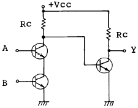
- OR회로
- AND회로
- NAND회로
- EOR회로
(정답률: 알수없음)
5. 전가산기(full adder)의 입출력 구조는?
- 입력 2개, 출력 2개
- 입력 3개, 출력 2개
- 출력 3개, 입력 2개
- 출력 3개, 입력 3개
(정답률: 알수없음)
6. 전원회로에서 무부하시 600[V], 부하시 500[V] 였다면 전압변동률은 얼마인가?
- 20%
- 30%
- 35%
- 45%
(정답률: 알수없음)
7. 다음 연산 증폭기에서 출력 전압의 크기는?
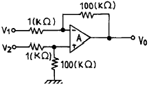
- Vo = 100(V2 - V1)
- Vo = V2 + V1
- Vo = 99(V1 - V2)
- Vo = V2 - V1
(정답률: 알수없음)
8. 다음 그림의 회로는 무슨 회로인가?
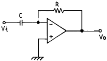
- 미분기
- 적분기
- 가산기
- 증폭기
(정답률: 알수없음)
9. 수정발진회로가 갖는 가장 큰 특징은?
- 잡음의 경감
- 출력의 증대
- 효율의 증대
- 발진주파수의 안정
(정답률: 86%)
10. 다음은 수정편의 리액턴스 특성이다. 발진에 이용될 주파수 범위는?
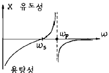
- ω S ＜ ω ＜ ω P
- ω P ＜ ω
- ω S ＜ ω
- ω S ＞ ω ＞ ω P
(정답률: 알수없음)
11. 변조도가 100[%]인 AM파의 출력 전력이 6[KW]라면 반송파 성분의 전력은 얼마인가?
- 2[KW]
- 4[KW]
- 8[KW]
- 12[KW]
(정답률: 알수없음)
12. 주파수 3[㎑]로 3[㎒]의 반송파를 주파수 변조하였을때 최대 주파수 편이가 ± 75[㎑]라면 소요 대역폭은?
- 225[㎑]
- 156[㎑]
- 150[㎑]
- 112.5[㎑]
(정답률: 알수없음)
13. 두개의 입력이 동시에 1 이 되었을 때에도 불확실한 출력상태가 되지 않도록 두개의 Flip-Flop을 사용한 회로는?
- RS F-F
- D F-F
- Master slave F-F
- T F-F
(정답률: 알수없음)
14. R-S Flip-Flop을 J-K Flip-Flop으로 만들고자 할 때 필요한 게이트(gate)는?
- OR gate 2개
- AND gate 2개
- NOR gate 2개
- NAND gate 2개
(정답률: 알수없음)
15. 다음 중 연산 증폭기의 특성과 관련 없는 것은?
- 높은 이득
- 낮은 CMRR
- 높은 입력 임피던스
- 낮은 출력 임피던스
(정답률: 알수없음)
16. 다음 부울대수식과 등가인 것은?
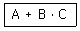
- AㆍBㆍ(A+C)
- (A+B)ㆍA+C)
- (A+B)ㆍAㆍC
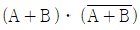
(정답률: 알수없음)
17. 발진이 생성될 수 있는 기본조건은?
- 회로의 증폭률이 최소 5 이상 필요하다.
- 증폭기에 부궤환회로를 부가한다.
- 공진결합회로가 필요하다.
- 증폭기에 정궤환회로를 부가한다.
(정답률: 64%)
18. PLL의 구성에 불필요한 것은?
- 위상검출기(PD)
- 전압제어 발진기(VCO)
- 저역통과필터(LPF)
- 자동주파수 제어(AFC)
(정답률: 알수없음)
19. 다음 논리 회로 중 팬 아웃(fan out)의 수가 많은 회로는?
- DTL 게이트
- TTL 게이트
- RTL 게이트
- DL 게이트
(정답률: 알수없음)
20. 다음 중 레지스터의 기능은?
- 펄스 발생기이다.
- 카운터의 대용으로 쓰인다.
- 회로를 동기시킨다.
- 데이터를 일시 저장한다.
(정답률: 알수없음)
2과목: 무선통신 기기
21. 위성의 전원공급 시스템의 예비용 2차 전원공급원으로 사용되는 것은?
- 건전지
- 태양 전지
- 수은 전지
- 니켈-카드뮴 축전지
(정답률: 알수없음)
22. 직선 검파기에서 Diagonal clipping이 발생하는 이유는?
- 직선 검파 외의 출력이 너무 커서
- 평균 검파기는 부하에 저항만 접속되어서
- 검파 회로 시정수가 너무 커서
- 직선 검파기의 출력측에는 직류 성분이 포함되어서
(정답률: 알수없음)
23. IDC회로를 사용하는 목적은?
- 주파수 체배를 정확하게 하기 위하여
- 최대 주파수 편이가 규정치를 넘지 않게 하기 위하여
- 반송파 진폭을 일정하게 하여 주파수 편이를 좋게하기 위하여
- 반송파 주파수를 일정하게 하기 위하여
(정답률: 알수없음)
24. 위상변조(PM)를 등가 주파수변조(FM)로 만들기 위해 사용되는 회로는?
- IDC회로
- 클리퍼회로(Clipper)
- 게이트회로(Gate Circuit)
- 프리디스토터(Pre-distortor)
(정답률: 알수없음)
25. 축전지에서 백색 유산연 발생의 직접적인 원인에 해당하지 않는 것은?
- 전해액의 비중이 너무 낮은 것
- 과도하게 충전하는것
- 방전한 대로 장시간 방치 하는 것
- 불충분한 충전을 하는 것
(정답률: 알수없음)
26. 다음 중 반송 신호의 순간 주파수가 PCM 코드에 응답하여 두 개의 값들 사이에서 전환되는 디지털 변조 시스템은 어느 것인가?
- ASK
- PSK
- FSK
- MSK
(정답률: 알수없음)
27. 마이크로파의 무급전 중계 방식에서 전파손실을 경감시키기 위한 방법 중 잘못된 것은?
- 중계구간을 짧게 한다.
- 사용 주파수를 낮게 한다.
- 반사판을 크게 한다.
- 반사각을 직각에 가깝게 한다.
(정답률: 알수없음)
28. DSB에 비해 SSB의 점유주파수 대폭은?
- 1/2배
- 2배
- 1/4배
- 3배
(정답률: 알수없음)
29. 슈우퍼 헤테로다인 수신기에서 중간주파 증폭기를 사용하는 목적은?
- 조정을 간단하게 하기 위하여
- 선택도를 좋게 하기 위하여
- 비직선 찌그러짐을 적게하기 위하여
- 기생발진을 방지하기 위하여
(정답률: 알수없음)
30. 다음 중 원하는 신호의 수신을 방해하는 에너지와 가장 관계 깊은 것은?
- 간섭
- 잡음
- 왜곡
- 감쇠
(정답률: 알수없음)
31. 수신기 감도(Sensitivity)을 향상시키는 방법에 대해 잘못 설명된 것은?
- 고주파 증폭부는 내부잡음이 적은 소자 사용
- 고주파 동조회로 Q를 크게 한다.
- IF 대역폭을 가능한 넓게 취한다.
- 내부 잡음이 적은 주파수 변환기 사용
(정답률: 알수없음)
32. 80[MHz]의 반송파를 최대 주파수 편이 60[kHz]로 하고 10[kHz] 신호파로 FM 변조했을 경우의 변조 지수는 얼마인가?
- 6
- 8
- 10
- 12
(정답률: 알수없음)
33. FM 방송용 수신기에서 중간 주파 신호의 스펙트럼을 0에 가깝게 하여 BPF를 통과시킨 후 스펙트럼을 재현함으로써 원래의 중간 주파신호를 얻는 방식은?
- 뮤팅(Muting) 방식
- 스펙트럼 IF 방식
- 넌 스펙트럼 IF(non spectrum IF) 방식
- 혼합기(Mixer) 방식
(정답률: 알수없음)
34. 송신기의 출력 회로를 조정하여 컬렉터 직류전압이 2[㎸] 컬렉터 직류전류가 200[㎃]일때 컬렉터 출력은? (단,컬렉터 효율은 60[%]이다.)
- 400[W]
- 240[W]
- 160[W]
- 120[W]
(정답률: 알수없음)
35. 다음 그림은 접지 공중선의 무엇을 측정하는 회로인가?
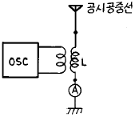
- 실효용량
- 실효인덕턴스
- 실효저항
- 고유파장
(정답률: 알수없음)
36. 다음 그림에서 변조도는 얼마인가?
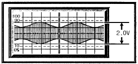
- 0.12
- 0.45
- 0.33
- 0.7
(정답률: 알수없음)
37. FM이 AM에 비하여 음질이 매우 좋은데 그 이유로 적당하지 않은 것은?
- 다이내믹 레인지가 좁기 때문이다.
- 주파수 특성이 넓은 범위에서 평탄하기 때문이다.
- 일그러짐이 적기 때문이다.
- 잡음의 영향을 적게 받기 때문이다.
(정답률: 알수없음)
38. PCM 통신 방식의 올바른 송신 과정은?
- 표본화 - 양자화 - 부호화 - 압축화
- 양자화 - 표본화 - 부호화 - 압축화
- 양자화 - 표본화 - 압축화 - 부호화
- 표본화 - 압축화 - 양자화 - 부호화
(정답률: 알수없음)
39. limiter 작용을 겸한 주파수 판별기는?
- ratio - detector 형
- foster - seeley 형
- round - travis 형
- stagger 동조형
(정답률: 알수없음)
40. 정류회로의 리플 함유율을 감소시키는 방법으로 부적합한 것은?
- 입력 측보다 츨력측 용량을 크게 한다.
- L 및 C를 적게한다.
- 전원 주파수 f를 높게 한다.
- 단상보다 3상화 한다.
(정답률: 알수없음)
3과목: 안테나 개론
41. 복사저항 300[Ω]인 두개의 안테나를 λ /4 임피이던스 변환기를 사용하여 300[Ω]의 평행 2선식 급전선에 정합시키고자 할때 변환기의 임피이던스는 얼마이어야 하는가?
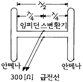
- 212[Ω]
- 300[Ω]
- 313[Ω]
- 424[Ω]
(정답률: 알수없음)
42. 빛의 속도를 C[m/s]라 할때 자유공간(진공)의 유전율[F/m]은? (단, μo=4π ×10-7이다)
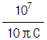
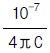
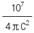
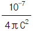
(정답률: 알수없음)
43. 중파대 주파수의 전파에 관한 설명중 틀리는 표현은?
- 지상파와 공간파에 의해 전파 한다.
- 주간의 전파 전파는 지상파가 주가된다.
- 야간에서는 D층과 E층에 의한 감쇠가 없고 F층 에서 반사된다.
- 일몰시 강한 페이딩이 일어난다.
(정답률: 알수없음)
44. 낮은 대역에서는 이득이 크고, 높은 대역에서는 이득이 작은, 텔레비젼 수신용 광대역 안테나는?
- 인라인 안테나
- 롬빅 안테나
- 애드콕 안테나
- 제펠린 안테나
(정답률: 알수없음)
45. 접어진 다이폴(folded dipole) 안테나의 설명으로 옳지 않는 것은?
- 한 번 접었을 때 급전점 임피던스는 293[Ω]이다.
- 도체의 굵기가 다르면 임피던스도 달라진다.
- 실효길이는 반파장 다이폴의 2배이다.
- 텔레비젼의 평행 2선 급전선과 정합이 불가능하다.
(정답률: 알수없음)
46. 지상파의 전파모양(propagation mode)과 관계 없는 것은?
- 주파수
- 대지의 유전률
- 대지의 도전률
- 온도
(정답률: 알수없음)
47. 초단파의 가시거리내의 특징에 관한 설명 중 틀린 것은?
- 지표파는 감쇠가 크므로 이용이 불가능하다.
- 직접파와 대지반사파에 의하여 수신전계가 정해진다.
- 회절파에 의한 수신전계는 장해물과 Fresnel Zone의 상대적 크기에 의해 정해진다.
- 신틸레이션, K형 및 덕트형 fading 을 받으며 해상 전파는 육상전파보다 안정하고 페이딩의 영향을 덜 받는다.
(정답률: 40%)
48. 다음중 λ/4 수직접지 안테나의 설명중 틀린 것은?
- 방송업무용으로 많이 쓰인다.
- 복사저항은 36.56[Ω ]이다.
- 발사전파는 수직편파이다.
- 단파용 선박 통신용으로 많이 쓰인다.
(정답률: 알수없음)
49. 지상에서 수직 상방으로 충격파를 발사후 1[msec]반사파를 관측했다. 이때 전리층의 높이는?
- 137[㎞]
- 145[㎞]
- 150[㎞]
- 159[㎞]
(정답률: 알수없음)
50. λ /4 수직접지 안테나로 400[㎾]의 전력을 복사할 때 200[㎞] 떨어진 곳에서의 전계강도는 얼마인가?(단, 대지는 완전도체로 본다.)
- 313[㎷/m]
- 31.3[㎷/m]
- 3.13[㎷/m]
- 0.313[㎷/m]
(정답률: 73%)
51. 평행2선식 급전선에서 특성임피이던스에 대한 설명이다. 틀린것은?
- 도선의 직경에 비례하고, 선간거리에 반비례한다.
- 도선의 직경에 비례하고, 선간거리에 비례한다.
- 도선의 직경에 반비례하고, 선간거리에 비례한다.
- 도선의 직경에 반비례하고, 선간거리에 반비례한다.
(정답률: 알수없음)
52. 수퍼게인(super gain)안테나를 TV송신용으로 사용하려고 할 때 고려하여야할 사항으로 맞지 않는 것은?
- 직렬공진과 병렬공진을 조합하여 합성리액턴스 성분을 크게하여 광대역 특성을 갖게 한다.
- 안테나의 Q를 낮게 하여 광대역성으로 한다.
- 광대역으로 하기 위하여 안테나 소자의 직경을 크게 한다.
- 트랩회로를 설치하여 광대역성으로 한다.
(정답률: 알수없음)
53. Wave 안테나의 특징이 아닌 것은?
- 광대역성이다.
- 지향성은 단향성이다.
- 주로 수신용에 이용된다.
- 정재파형 안테나이다.
(정답률: 알수없음)
54. 반파장 다이폴 안테나에 대해 잘못된 것은?
- 반송 주파수의 λ/2 길이를 갖는 공진 안테나이다.
- 진행파형 안테나이다.
- 전류는 양쪽 끝에서 0 이 된다.
- 전압은 양쪽 끝에서 최대가 된다.
(정답률: 알수없음)
55. 선로의 특성 임피던스를 Z0, 부하 임피던스를 ZR이라고 할 경우, 정재파비가 1이라고 하는 것은?
- 반사파가 없을 경우
- 반사계수가 1인 경우
- ZR≠Z0인 경우
- 진행파와 반사파의 크기가 같은 경우
(정답률: 알수없음)
56. 안테나의 효율에 관한 사항으로 옳지 않은 것은?
- 손실저항에 비해 복사저항이 클수록 효율이 좋다.
- 접지 안테나의 길이가 λ /4보다 짧을수록 접지저항이 작아야 효율에서 유리하다.
- 손실저항이 작으면 복사저항에 관계없이 효율이 나빠진다.
- 안테나의 절연이 불량하면 효율이 나빠진다.
(정답률: 알수없음)
57. 도파관의 임피던스 정합회로가 아닌 것은?
- 분배기(distributor)
- 1/4파장 임피던스 변성기(Q transformer)
- 도파관 창(window)
- 스터브 공진기(stub tuner)
(정답률: 알수없음)
58. 자유공간(유전율 = εo, 투자율 = μo)을 속도 V[m/s]로 전파하는 전자파 E[V/m]및 H[A/m]가 있다. 전계 및 자계간의 관계식은?
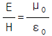
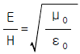
- EH=ε0μ0
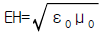
(정답률: 알수없음)
59. 안테나의 전력이 10[W]에서 85[W]로 증가하였을 때 전계 강도는 몇 배 증가하는가?
- 약 3.5배
- 약 2.9배
- 약 2.5배
- 약 2.4배
(정답률: 알수없음)
60. 태양에서 발생하는 자외선의 돌발적 증가로 인하여 발생되는 전파방해는?
- 에코우(echo)
- 록셈부르코 효과(luxemburg effect)
- 델린저 현상(dellinger effect)
- 자기람(magnetic storm)
(정답률: 알수없음)
4과목: 전자계산기 일반 및 무선설비기준
61. 마이크로프로세서의 주소지정방식중 옳지 않은 것은?
- 즉치주소방식(immediate addressing)
- 간접주소방식(indirect addressing)
- 참조주소방식(reference addressing)
- 인덱스주소방식(indexing addressing)
(정답률: 알수없음)
62. 송신설비의 공중선, 급전선 또는 카운터포이즈로서 고압 전기를 통하는 것은 그 높이가 사람이 보행하거나 기거하는 평면으로부터 얼마 이상으로 규정하고 있는가?(단, 단서규정은 제외)
- 1.5[m]이상
- 2[m]이상
- 2.5[m]이상
- 3[m]이상
(정답률: 알수없음)
63. 공중선계의 충족 조건으로 적합치 못한 것은?
- 정합이 충분할 것
- 만족한 지향특성을 얻을 수 있을 것
- 수평면의 주복사각도의 폭이 클 것
- 공중선의 이득이 높고 능률이 좋을 것
(정답률: 알수없음)
64. 다음중 전자파적합등록 대상기기는 어느 것인가?
- 전기통신기본법에 의한 형식승인을 얻은 전기통신 기자재
- 자동차관리법에 의한 형식승인을 얻은 자동차
- 약사법에 의한 품목허가를 받은 의료용구
- 가정용 전기기기 및 전동기기류
(정답률: 60%)
65. 전자계산기에서 계산속도가 빠른 단위 순서대로 나열된 것은?
- ps-ns-μs-ms
- μs-ps-ns-ms
- ms-μs-ns-ps
- ms-ns-μs-ps
(정답률: 알수없음)
66. 입출력장치와 마이크로프로세서 사이의 접속장치(Interface)에서 악수하기 (Handshaking)라는 뜻은?
- CPU의 병렬데이터를 I/O장치에 맞추어 직렬 데이터로 변환하기
- CPU와 I/O 장치 사이의 제어신호 교환하기
- I/O장치의 전압높이를 CPU에 맞추기
- CPU가 사용하지 않는 버스를 I/O 장치에서 제어하기
(정답률: 알수없음)
67. 정보통신기기인증서에 기재사항이 아닌 것은?
- 기기의 명칭
- 인증의 종류
- 인증번호
- 인증의 명칭
(정답률: 알수없음)
68. C3F, F3E. G3E전파의 텔레비젼 방송국의 무선설비로서의 점유주파수 대역폭의 허용치는?
- 16[kHz]
- 5[kHz]
- 6[MHz]
- 27[MHz]
(정답률: 알수없음)
69. 선형 리스트중 마지막으로 입력한 자료가 제일 먼저 출력되는 LiFO(Last in first out)구조는?
- 트리
- 스택
- 큐
- 섹터
(정답률: 알수없음)
70. 535kHz초과 1606.5kHz이하의 주파수를 발사하는 방송국의 주파수 허용편차는?
- 10Hz
- 50Hz
- 100Hz
- 1kHz
(정답률: 알수없음)
71. 컴퓨터 시스템에서 명령형식을 보통 1-주소방식, 2-주소방식, 3-주소방식으로 분류하는 기준이 되는 것은?
- 기억 장치의 용량
- 명령어의 수
- 오퍼랜드의 수
- 레지스터의 수
(정답률: 알수없음)
72. 진폭변조의 양측파대로서 아날로그정보를 포함하는 단일 채널의 전화(음성방송 포함)의 전파형식 표시기호는?
- A2B
- F3E
- C3F
- A3E
(정답률: 알수없음)
73. 공중선전력의 허용편차로 틀린 것은?
- 비상위치지시용 무선표지설비 : 상한 20%, 하한 50%
- 초단파방송을 행하는 방송국의 송신설비 : 상한 10%, 하한 20%
- 표준방송을 행하는 방송국의 송신설비 : 상한 5%, 하한 10%
- 디지털텔레비젼방송국의 송신설비: 상한 5%, 하한 5%
(정답률: 알수없음)
74. 컴퓨터 시스템 성능 평가 요인들 중 해당되지 않는 것은?
- program size
- reliability
- throughput
- turnaround time
(정답률: 알수없음)
75. 다음 중에서 일반적으로 프로그램을 수행하는데 필요하지 않는 장치는 어느 것인가?
- 보조기억장치
- 연산장치
- 제어장치
- 기억장치
(정답률: 알수없음)
76. ASCII 코드에서 존(ZONE) 비트로 사용되는 비트의 수는?
- 1
- 2
- 3
- 4
(정답률: 알수없음)
77. 부표 등에 탑재되어 위치 또는 기상관련 자료 등을 자동으로 송신하는 무선설비는?
- 텔레미터(Telemeter)
- 라디오 존데(Radio Sonde)
- 라디오 부이(Radio Buoy)
- 기상용 라디오 로봇(Radio Robot)
(정답률: 알수없음)
78. 2진수 0111을 그레이 코드(Gray code)로 바꾸면 무엇인가?
- 1010
- 0100
- 0000
- 1111
(정답률: 알수없음)
79. 서브루틴에 대한 설명으로 틀린 것은?
- 자주 사용되는 일련의 프로그램은 서브루틴으로 구성한다.
- 인터럽트 발생시의 처리프로그램은 서브루틴으로 구성한다.
- 일반적으로 I/O 프로그램은 서브루틴으로 구성한다.
- 부프로그램은 주프로그램과 동시에 수행되도록 서브 루틴으로 구성한다.
(정답률: 알수없음)
80. 무선기기의 형식검정의 심사는 누가 하는가?
- 전파연구소장
- 정보통신부장관
- 전파관리국장
- 한국통신사장
(정답률: 알수없음)
베이스 접지시에는 베이스와 에미터 사이의 전압이 0V가 되므로, 이때의 베이스 전류 IB는 콜렉터 전류 Ic와 역포화 전류 Ico를 합한 값과 같습니다. 따라서 IB = Ic + Ico가 성립합니다.
여기서 주어진 값에 따라 Ico = 100[㎂], IB = 10[㎃]이므로, Ic = IB - Ico = 9.9[㎃]입니다. 이때 α를 곱해주면 콜렉터 전류 Ic의 증폭된 값인 9.9 x 0.98 = 9.702[㎃]이 나오지만, 보기에서는 단위가 [㎃]으로 주어졌으므로 반올림하여 495[㎃]이 됩니다.
따라서 정답은 "495[㎃]"입니다.